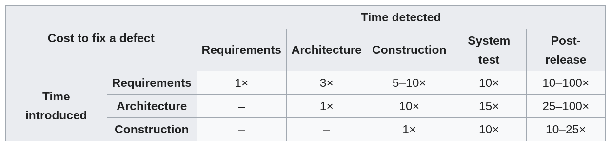
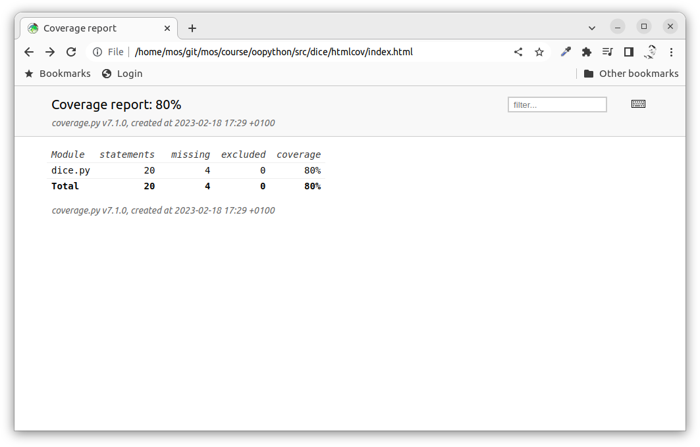
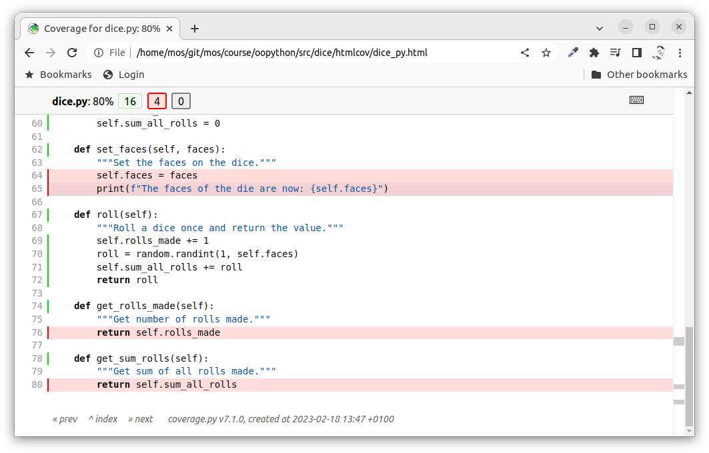

<!doctype html>
<html class="theme-5">
<meta charset="utf-8" />
<link href="../html-slideshow.bundle.min.css" rel="stylesheet" />
<link href="../style.css" rel="stylesheet" />
<script src="https://dbwebb.se/cdn/js/html-slideshow_v1.1.0.bundle.min.js"></script>

<title>Python</title>

<script data-role="slide" type="text/html" data-markdown class="titlepage center">
# Python
## Unit test and code coverage
### Mikael Roos
</script>


<script data-role="slide" data-markdown type="text/html">
# Agenda

* About testing & unit testing
* Unit tests in Python
* The module unittest
* The module coverage
* How to work with unit tests
* How to think about unit tests

</script>


<script data-role="slide" type="text/html" data-markdown class="titlepage center">
# Testing
</script>


<script data-role="slide" type="text/html" data-markdown>
# The essence of testing

1. Find bugs early, before someone else finds them.
2. Provide the feeling that your software is correct.

</script>


<script data-role="slide" type="text/html" data-markdown class="center">
# Cost to fix a defect
<figure>

<figcaption>The table shows the cost of fixing the defect depending on the stage it was found (<a href="https://en.wikipedia.org/wiki/Software_testing#Controversy">source</a>).</figcaption>
</figure>
</script>


<script data-role="slide" type="text/html" data-markdown class="center">
# The last picture
<figure>

<figcaption>This was the last photo that the Beresheet spacecraft captured before it crashed into the lunar surface on April 12, 2019, due to a bug in the software (<a href="https://www.space.com/beresheet-moon-crash-engine-glitch.html">article</a>).</figcaption>
</figure>
<!--
Israel's first attempt to land an unmanned spacecraft on the moon with the Beresheet was rendered unsuccessful on April 11, 2019 due to a software bug with its engine system, which prevented it from slowing down during its final descent on the moon's surface. Engineers attempted to correct this bug by remotely rebooting the engine, but by time they regained control of it, Beresheet could not slow down in time to avert a hard, crash landing that disintegrated it.
-->
</script>


<script data-role="slide" type="text/html" data-markdown>
# Unit testing

* Divide your code into units
* Write code to execute code in each unit
* Execute in isolation from other units
* Execute from different aspects
    * (correct input, wrong input, exception, expected state, return, etc)
* Run the tests automatically

</script>


<script data-role="slide" type="text/html" data-markdown class="titlepage center">
# Write testable code
## Unit testing produces better code
</script>


<script data-role="slide" type="text/html" data-markdown>
# The arguments

* Finds problems early in the development cycle

* Problems beeing:
    * bugs in the programmer's implementation
    * flaws or missing parts of the specification

</script>


<script data-role="slide" type="text/html" data-markdown>
# The arguments...

* Process of writing a thorough set of **tests forces the author to think** through inputs, outputs, and error conditions, and thus more crisply define the unit's desired behavior.

</script>


<script data-role="slide" type="text/html" data-markdown>
# The arguments...

* The **cost of finding a bug** before coding begins or when the code is first written is considerably lower than the cost of detecting, identifying, and correcting the bug later.

* Bugs in released code may also cause **costly problems for the end-users** of the software.

</script>


<script data-role="slide" type="text/html" data-markdown>
# The arguments...

* Code can be **impossible or difficult to unit test** if poorly written, thus unit testing can force developers to structure functions and objects in better ways.

</script>


<script data-role="slide" type="text/html" data-markdown>
# Pros of unit testing

* You need to think about how to use your code
* You need to write code that is testable
* The result is testable and good code (better than code that is hard to test)

</script>


<script data-role="slide" type="text/html" data-markdown>
# Black or white box test

* Black box testing - "Test the code without knowing how it look like"
* White box testing - "Test the code knowing exactly how it look like"

> "Unit testing is white box testing."

</script>


<script data-role="slide" type="text/html" data-markdown class="titlepage center">
# Python and unit testing
## unittest - Unit testing framework
</script>


<script data-role="slide" data-markdown type="text/html">
# Python unittest

* unittest - Unit testing framework
* Originally inspired by JUnit (Java)
* Similar flavor as major unit testing frameworks in other languages
* Supports test automation,
    * sharing of setup and shutdown code for tests,
    * aggregation of tests into collections

```
python -m unittest --help
```

<p class="footnote">https://docs.python.org/3/library/unittest.html</p>

</script>


<script data-role="slide" data-markdown type="text/html">
# Terminology

* Test fixture
* Test case
* Test suite
* Test runner
* Assertions

</script>


<script data-role="slide" data-markdown type="text/html">
# Test fixture

> A test fixture represents the preparation needed to perform one or more tests, and any associated cleanup actions.

> This may involve, for example, creating temporary or proxy databases, directories, or starting a server process.

</script>


<script data-role="slide" data-markdown type="text/html">
# Test case

> A test case is the individual unit of testing. It checks for a specific response to a particular set of inputs. 

> unittest provides a base class, TestCase, which may be used to create new test cases.

</script>


<script data-role="slide" data-markdown type="text/html">
# Test suite

> A test suite is a collection of test cases, test suites, or both.

> It is used to aggregate tests that should be executed together.

</script>


<script data-role="slide" data-markdown type="text/html">
# Test runner

> A test runner is a component which orchestrates the execution of tests and provides the outcome to the user.

> The runner may use a graphical interface, a textual interface, or return a special value to indicate the results of executing the tests.

</script>


<script data-role="slide" data-markdown type="text/html">
# Run a test suite

```
$ python -m unittest discover     
..                               
---------------------------------
Ran 2 tests in 0.000s            
                                 
OK                               
```

</script>


<script data-role="slide" data-markdown type="text/html">
# Verbosity

* Show details using the flag `-v`

```
$ python -m unittest discover -v

test_init_default_object (test_dice.TestDiceClass)       
Instantiate an object and check its properties. ... ok   

test_roll_a_dice (test_dice.TestDiceClass)               
Roll a dice and check value is in bounds. ... ok         
                                                         
---------------------------------------------------------
Ran 2 tests in 0.000s                                    
                                                         
OK                                                       
```

</script>


<script data-role="slide" type="text/html" data-markdown>
# Assertions

* Verify (assert) that each test produces expected result or behaviour

> "If there is no assertion, then there is no test."

</script>


<script data-role="slide" data-markdown type="text/html">
# A test class

* Test class `test_dice.py` to test the class `dice.py`.

```
"""Unit testing."""

import unittest
import dice

class TestDiceClass(unittest.TestCase):
    """Test the class."""

if __name__ == "__main__":
    unittest.main()
```

</script>


<script data-role="slide" data-markdown type="text/html">
# A test case

* Example - Instantiate an object and check its properties

```
def test_init_default_object(self):
    """Instantiate an object and check its properties."""
    
    die = dice.Dice()
    self.assertIsInstance(die, dice.Dice)

    res = die.faces
    exp = 6
    self.assertEqual(res, exp)
```

</script>


<script data-role="slide" data-markdown type="text/html">
# A test case...

* Example - Roll a dice and check value is in bounds

```
def test_roll_a_dice(self):
    """Roll a dice and check value is in bounds."""

    die = dice.Dice()

    res = die.roll()
    exp = 1 <= res <= die.faces
    self.assertTrue(exp)
```

</script>


<script data-role="slide" data-markdown type="text/html">
# Assertions

| Method | Checks that |
|--------|-------------|
| assertEqual(a, b) | a == b |
| assertNotEqual(a, b) | a != b |
| assertTrue(x) | bool(x) is True |
| assertFalse(x) | bool(x) is False |
| assertIs(a, b) | a is b |
| assertIsNot(a, b) | a is not b |
| assertIsNone(x) | x is None |
| assertIsNotNone(x) | x is not None |
| assertIn(a, b) | a in b |
| assertNotIn(a, b) | a not in b |
| assertIsInstance(a, b) | isinstance(a, b) |
| assertNotIsInstance(a, b) | not isinstance(a, b) |

</script>


<script data-role="slide" data-markdown type="text/html">
# Assertions...

| Method | Checks that |
|--------|-------------|
| assertAlmostEqual(a, b) | round(a-b, 7) == 0 |
| assertNotAlmostEqual(a, b) | round(a-b, 7) != 0 |
| assertGreater(a, b) | a > b |
| assertGreaterEqual(a, b) | a >= b |
| assertLess(a, b) | a < b |
| assertLessEqual(a, b) | a <= b |
| assertRegex(s, r) | r.search(s) |
| assertNotRegex(s, r) | not r.search(s) |
| assertCountEqual(a, b) | a and b have the same elements in the same number, regardless of their order. |

</script>


<script data-role="slide" data-markdown type="text/html">
# Fixtures

> The `setUp()` and `tearDown()` methods allow you to define instructions that will be executed before and after each test method

```
import unittest

class WidgetTestCase(unittest.TestCase):

    def setUp(self):
        self.widget = Widget('The widget')

    def tearDown(self):
        self.widget.dispose()
```

</script>


<script data-role="slide" data-markdown type="text/html">
# Class fixtures

* Prepare an environment for the test case for the entire class

```
import unittest

class Test(unittest.TestCase):

    @classmethod
    def setUpClass(cls):
        cls._connection = createExpensiveConnectionObject()

    @classmethod
    def tearDownClass(cls):
        cls._connection.destroy()
```

</script>


<!--
<script data-role="slide" data-markdown type="text/html">
# Assert raises

* Test for when a error is raised

```
def test_highscore1(self):
    """Verify that a specific exception is raised in the code."""

    obj = main.SomeClass()

    with self.assertRaises(FileNotFoundError):
        obj.highscore1()
```

</script>
-->


<script data-role="slide" data-markdown type="text/html">
# Skip decorator

* Skipping test methods and classes of tests

```
@unittest.skip("demonstrating skipping")
def test_nothing(self):
    self.fail("shouldn't happen")
``` 

```
@unittest.skip("showing class skipping")
class MySkippedTestCase(unittest.TestCase):
    def test_not_run(self):
        pass
```

```
def test_maybe_skipped(self):
    if not external_resource_available():
        self.skipTest("external resource not available")
    # test code that depends on the external resource
    pass
```

</script>


<script data-role="slide" data-markdown type="text/html">
# Sum test case

One test case for one execution path, keep them small and focused

* SetupClass
    * Setup
        * Execute
        * Assert
    * Teardown 
* TeardownClass

</script>


<script data-role="slide" type="text/html" data-markdown class="titlepage center">
# Code coverage
</script>


<script data-role="slide" data-markdown type="text/html">
# Coverage.py

* Tool for measuring code coverage
* Noting which parts of the code have been executed
* Analyzes the source to identify code that could have been executed but was not
* Used to gauge the effectiveness of tests
* Show which parts of your code are being exercised by tests, and which are not.

<p class="footnote">https://coverage.readthedocs.io/</p>

</script>


<script data-role="slide" data-markdown type="text/html">
# Install it

* Using pip

```
python -m pip install coverage
python -m pip install -r requirements.txt
```

* Part of `requirements.txt`

```
coverage
```

</script>


<script data-role="slide" data-markdown type="text/html">
# Use it

* Run the unittests using coverage

```
$ coverage run -m unittest discover               
..                                              
------------------------------------------------
Ran 2 tests in 0.000s                           
                                                
OK     
```

```                                       
$ coverage html                                   
Wrote HTML report to htmlcov/index.html
```

```
$ coverage report -m                              
Name      Stmts   Miss  Cover   Missing         
---------------------------------------         
dice.py      20      4    80%   64-65, 76, 80   
---------------------------------------         
TOTAL        20      4    80%                   
```

</script>


<script data-role="slide" type="text/html" data-markdown class="center full">
<figure>

</figure>
</script>


<script data-role="slide" type="text/html" data-markdown class="center full">
<figure>

</figure>
</script>


<script data-role="slide" type="text/html" data-markdown class="titlepage center">
# Hints for unittesting
</script>


<script data-role="slide" data-markdown type="text/html">
# Capture output

> How to unittest a method that is printing a string to stdout?

A) First I would consider rewriting the module to return values instead of printing them to the console. That might be a test object that is more easy to test. That would be my main strategy.

<p class="footnote">https://gitlab.com/mikael-roos/oopython/-/tree/main/questions-and-answers#how-to-unittest-a-method-that-is-printing-a-string-to-stdout</p>

</script>


<script data-role="slide" data-markdown type="text/html">
# Capture output...

B) If that can not be done I would consider to capture the output to a string and then check what it contains. This might be useful when a lot of text is printed and one only wants to check that the text contains a few items.

<p class="footnote">https://gitlab.com/mikael-roos/oopython/-/blob/main/questions-and-answers/dice-test-print/dice_capture_test.py</p>

</script>


<script data-role="slide" data-markdown type="text/html">
# Capture output...

```
# Prepare to capture the output
capturedOutput = io.StringIO()
sys.stdout = capturedOutput

# Call the method(s) printing to stdout (and capture the output)
die.print_last_roll()

# Reset the capture
sys.stdout = sys.__stdout__

# get the captured output
output = capturedOutput.getvalue()

# Check if the last roll is printed
self.assertTrue(str(res) in output)
# Check if the value of rolls_made is printed
self.assertTrue("1" in output)
```

</script>


<script data-role="slide" data-markdown type="text/html">
# Capture output...

C) I can also use the built in unittest.mock library where I can mock a method/function and capture how it is called.

<p class="footnote">https://gitlab.com/mikael-roos/oopython/-/blob/main/questions-and-answers/dice-test-print/dice_mock_test.py</p>

</script>


<script data-role="slide" data-markdown type="text/html">
# Capture output...

```
@unittest.mock.patch('builtins.print')
def test_printing_last_roll(self, mock_print):
    """Check that the last roll is printed."""
    die = dice.Dice()

    res = die.roll()
    die.print_last_roll()

    # Get the arguments that the print function was called with
    args, _ = mock_print.call_args
    # Check if the last roll is printed
    self.assertTrue(str(res) in args[0], args)
    # Check if the value of rolls_made is printed
    self.assertTrue("1" in args[0], args)
```

</script>


<script data-role="slide" data-markdown type="text/html">
# Exceptions

* Verify that an exception is raised

```
def test_highscore1(self):
    """Verify that a specific exception is raised in the code."""
    obj = main.SomeClass()

    with self.assertRaises(FileNotFoundError):
        obj.highscore1()
```

<p class="footnote">https://gitlab.com/mikael-roos/oopython/-/tree/main/questions-and-answers/unittest-exception</p>

</script>


<!--
<script data-role="slide" data-markdown type="text/html">
# Randomized values

* How to check when random?

```
def test_check_number_being_13(self):
    """Check when number is 13."""
    obj = main.SomeClass()
    obj.randomize_number()
    obj.magic_number = 13
    with self.assertRaises(ValueError):
        obj.check_number()

def test_check_number_not_being_13(self):
    """Check when number is not 13."""
    obj = main.SomeClass()
    obj.randomize_number()
    obj.magic_number = 42
    obj.check_number()
```

<p class="footnote">https://gitlab.com/mikael-roos/oopython/-/tree/main/questions-and-answers/unittest-random</p>

</script>


<script data-role="slide" data-markdown type="text/html">
# Log during tests

> Sometimes you want to debug your unittests (or your code) and print information from the execution. You can do so using the logging module.

```
# Print messages using logging
logging.basicConfig(stream=sys.stderr)
log = logging.getLogger("LOG")
log.warning(f"Dice was: {res}")
```

<p class="footnote">https://gitlab.com/mikael-roos/oopython/-/tree/main/questions-and-answers/dice-test-log-during-test</p>

</script>


<script data-role="slide" type="text/html" data-markdown class="titlepage center">
# Are my tests good?
</script>
-->


<script data-role="slide" type="text/html" data-markdown class="titlepage center">
# Final thoughts
</script>


<script data-role="slide" type="text/html" data-markdown>
# How to think?

* Do all modules/classes have a corresponding test file?
* Does each testcase have at least one assertion?
* Have I tests focusing on negative testing?
* Have all public methods test cases?
* Do some complex methods needs extra testing?
* Coverage of the unit tests, do we have enough or reasonable coverage?

</script>


<script data-role="slide" type="text/html" data-markdown>
# What does it say?

* This does not say anything about how great our unit tests are, but it provides a base of sanity and a place to start.
* It does not say how well are are testing the application logic.
* It just says "we do have accurate unit tests and a proper coverage". Still, it is a good start.

</script>


<script data-role="slide" type="text/html" data-markdown>
# Tactic

* Test all possible execution paths
    * Use skip to design the test cases, show whats not tested
* Start with the ones that are the main execution paths that provide actual correct values
* Continue to add test cases to show that expected exceptions are raised. These are failure that you have handled in your code.
* Continue with all the areas that migh go wrong (send in wrong arguments, wrong types of values) and see if your code deals with it.
* Eventually you will say "this is enough"

</script>


<script data-role="slide" type="text/html" data-markdown>
# Summary

* About testing & unit tests
* Unit tests in Python
* The module unittest
* The module coverage
* How to work with unit tests
* How to think about unit tests

</script>


<script data-role="slide" type="text/html" data-markdown class="titlepage center">
# The End
</script>


<script data-role="slide" data-markdown type="text/html">
</script>
